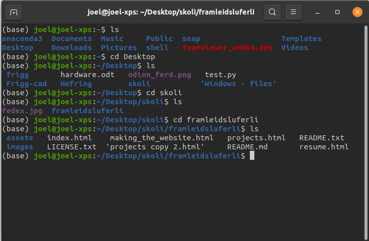
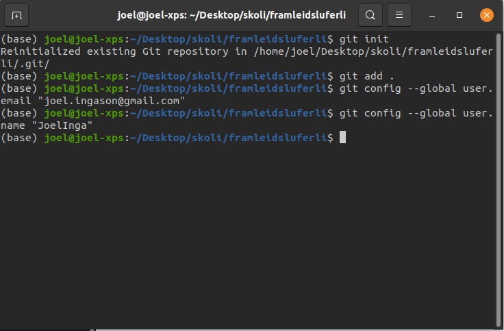
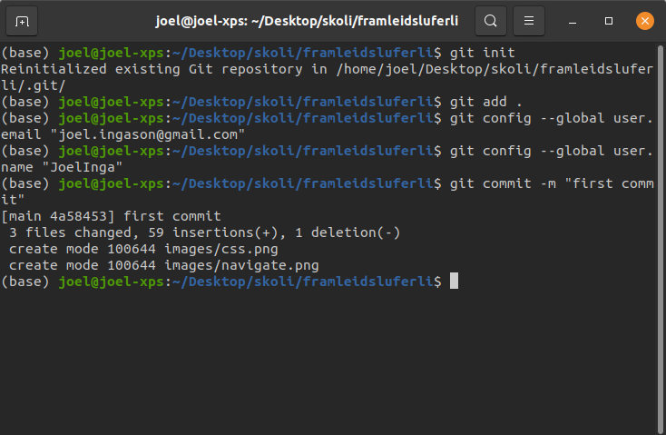
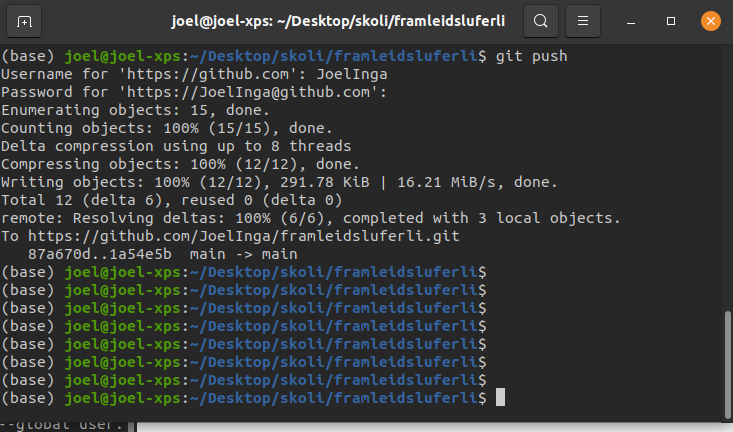

Modifications made to the code from HTML5 UP
I started by modifying the text on the website and replaced a few images. I wanted to replace the icons on the website with my own images but when I did that the margin was all wrong, to solve this I created a CSS style I call ".tab". The code for the CSS style is as follows:
.tab { margin-left: 35px; }
To implement the style I just wrote:
<div class="tab">
<h3>header</h3>
<p>text to write</p>
</div>
The result was:
When writing the resume page I wanted to have a right and left aligned text on the same line. For that you set the style in the <p style = "style to choose">text</p> sextion. I used the following implementation:
<p style="text-align:left;">
<b>
Communication system design and data collection
</b>
<span style="float:right;">
June 2020 - Present
</span>
</p>
In addition I also wanted to undeline the header for each seaction. For that I created another CSS style. The code for the CSS style is:
.underline{
border-bottom: 1px solid rgb(0, 0, 0);
width: 100%;
display: block;
}
To implement the style I wrote:
<span class = "underline">
<h2 style="margin-bottom:0;">
Experience
</h2>
</span>
After finishing the resume page and the "Making of this website" page I continued to make minor modifications and when I was happy with the result I used Git bash to puplish the website. The procedure is as follows:
It is important to note that I use Ubuntu so the installing procedure and commands might be different from your own OS. Please check the official instructions for installing Git bash on your machine.
- Download and install Git.
- Open a terminal and navigate to the folder where your project is located. 
- In the terminal, type
git initand press enter to initialize an empty Git repository. - Type
git add .and press enter to add the files to Git. - Type
git config --global user.email "your-address@example.com"and press enter. - Type
git config --global user.name "YOUR_USERNAME"and press enter.

- Type
git commit -m "first commit"to add your first commit.

- Go to your Github page and copy the link to the repository. Then type
git remote add origin "your link here". - Type
git pushto push changes to your repository. You will be prompted to sign into your GitHub account.

- Change the repository link to a name of your choosing.
Now for the most important part, enjoy the fruits of your labor.
The code in its entirety can be found in Github repository